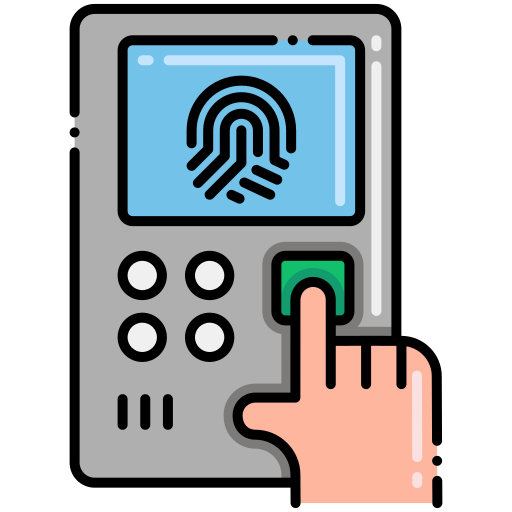

Consejos generales
- Tomá nota de cualquier error o comportamiento extraño del sistema.
- Hacé un mantenimiento mensual de los equipos y programas.
- Mantené actualizados todos los componentes (hardware y software).
- Enseñales a los usuarios cómo usar correctamente los lectores y la aplicación.
- Tené siempre un plan de respaldo por si ocurre alguna falla.
Lector de huellas
- Mantené el sensor limpio y seco antes de usarlo.
- Asegurate de que el lector esté bien conectado y encendido.
- Pedile a los usuarios que limpien y sequen sus dedos antes de colocar la huella.
- Si el sistema se actualiza o deja de responder, reinicialo antes de volver a usarlo.
- Volvé a registrar la huella si el usuario cambió su huella por cortes o desgaste.

Base de datos
- Verificá que el programa de base de datos esté funcionando antes de usar el sistema.
- Hacé copias de seguridad cada cierto tiempo para no perder información importante.
- No apagues el sistema mientras se estén guardando registros.
- Revisá que los datos estén actualizados y sincronizados con los demás componentes.
Lector NFC y tarjetas
- Revisá que el lector esté bien conectado al equipo.
- Evitá apoyar objetos metálicos o electrónicos cerca del lector (pueden causar interferencias).
- Comprobá que las tarjetas estén limpias y sin daños.
- Probá el lector con una tarjeta de prueba de vez en cuando para asegurarte de que funcione bien.
- Guardá una tarjeta de repuesto por si alguna falla.
Interfaz gráfica (Tkinter) y aplicación
- Cerrá el programa correctamente cuando termines de usarlo.
- Comprobá que Python y las librerías estén actualizadas.
- Si notás que algo anda lento o se bloquea, reiniciá la aplicación.
- Evitá hacer cambios en el código si no estás seguro, para no afectar su funcionamiento.